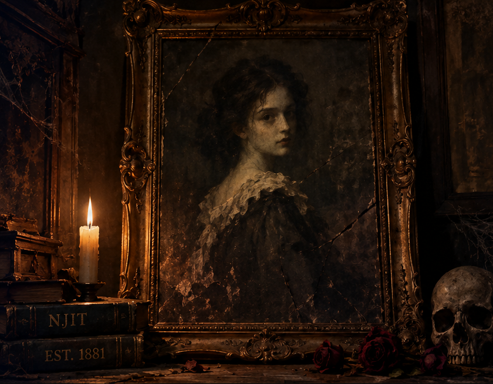
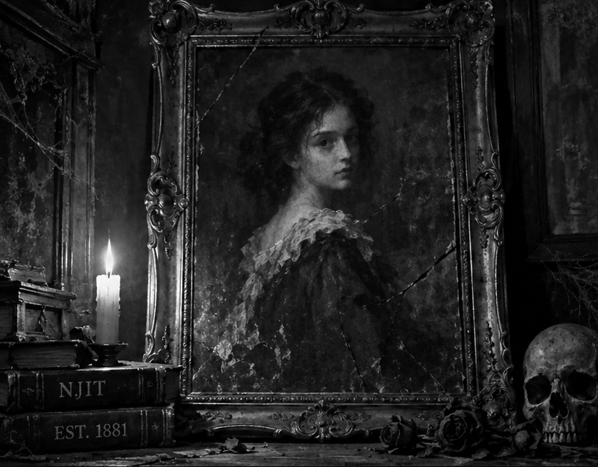
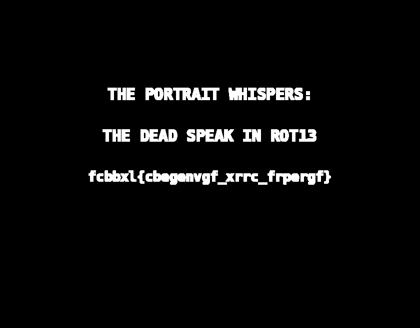

Starting from the Challenge

The challenge says a secret message may be hidden in an old portrait found shortly before Halloween. The supplied haunted_portrait.png shows a woman in a frame, a candle, a skull, and books. NJIT and EST. 1881 are readable on the book spines. They refer to the university hosting the CTF and its founding year, so they did not appear to be clues.
1. Checking the PNG structure
I inspected the file header and chunks in HxD. The signature matched PNG, and the chunks appeared in this order:
IHDR → IDAT × 12 → IEND
The image opened normally, every chunk's CRC(Cyclic Redundancy Code) matched, and there were no text chunks or bytes after IEND. With no message in the file structure, I turned to the pixel values.
2. Separating the color channels
Q: If the PNG structure contains no message, how might one be hidden in the image itself?
CTF image challenges may hide faint text or clues in the picture, or store information in a color channel or particular pixel bits. Differences between the Red, Green, and Blue channels can be hard to see in the combined image, so I separated the RGB channels to look for a pattern.
In WSL, I used ImageMagick's convert to make a grayscale image from each RGB channel.
mkdir -p channels
convert haunted_portrait.png -channel RGB -separate channels/channel.png
channel-0.png shows the Red channel. Pixel values near 0 appear black, while values near 255 appear white.

No additional text appeared in this image. The Green and Blue channels also looked like ordinary grayscale portraits. A message could still be hidden in specific bits or combinations of bits, so I displayed the lowest bit of each channel separately.
3. Viewing the color channels' lowest bits
Applying AND 1 to a channel value retains only its LSB(Least Significant Bit). I displayed pixels with a result of 0 as black and pixels with a result of 1 as white.
mkdir -p lsb
for c in R G B; do
convert haunted_portrait.png -channel "$c" -separate +channel \
-evaluate And 1 -auto-level "lsb/${c}.png"
done
The blue channel's B.png revealed a clear message.

THE PORTRAIT WHISPERS:
THE DEAD SPEAK IN ROT13
fcbbxl{cbegenvgf_xrrc_frpergf}
4. Applying ROT13
THE DEAD SPEAK IN ROT13 gives the decoding method. ROT13(Rotation by 13 places) shifts English letters by 13 positions. Applying it to the last line gives:
python3 -c 'import codecs; print(codecs.decode("fcbbxl{cbegenvgf_xrrc_frpergf}", "rot_13"))'
spooky{portraits_keep_secrets}
Final Flag
spooky{portraits_keep_secrets}
Summary
- File structure: The PNG contained
IHDR, twelveIDATchunks, andIEND. - Hidden message: Displaying the blue channel's lowest bit as black and white revealed the text.
- Decode: Applying the image's ROT13 instruction to the ciphertext produced the flag.
- Inspect haunted_portrait.png
- Check PNG chunks
- Separate RGB channels
- Display blue channel LSB
- Apply ROT13 → flag